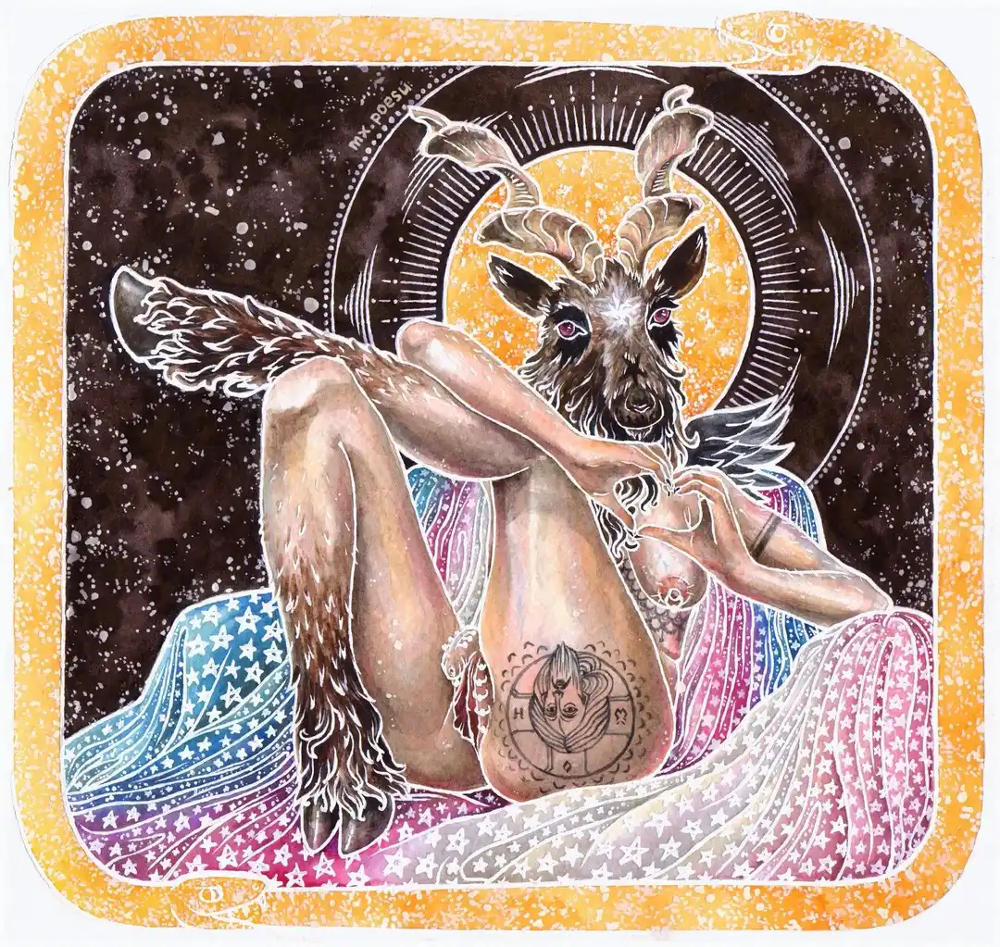

Baphomet
 March 12, 2023
March 12, 2023
Watercolour, ink, and gouache on cold-press watercolour paper, A4
Work in progress
I literally got inspiration for this from an anti-trans rally placard. 'Baphomet is transgender'? Good for him Also at the time of drawing him, I didn't know phallus-preserving vaginoplasty exist, lol, I simply wanted something other than endosex genitalia.